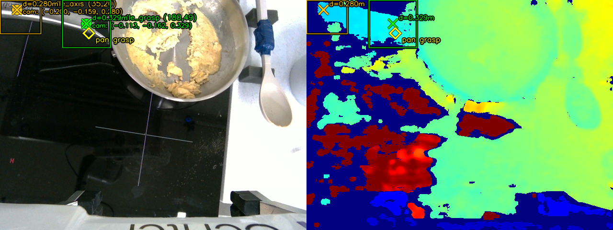
Perpendicular Grasp
On the pan handle, the gripper closes perpendicular to the handle. Gemini gives us both the grasp point and the handle's orientation, so the jaws line up across it for a solid hold while moving the pan.
Stanford CS 225A · Spring 2026
We use eight distinct manipulation tasks, from placing the egg in the cracker to scrambling in the pan. Use the arrows to browse each stage.
We use Gemini Embodied Reasoning 1.6 to figure out where to grab our objects. For each RGB-D frame from the wrist camera, Gemini marks one or several 2D grasp points on the relevant object. We look up that pixel's depth, then run it through the camera → end-effector → world transform to get the actual 3D grasp pose for the arm.
The arm runs on a task-space Cartesian controller, and we tune its gains and speeds per task. Precise grasps like the egg cracker and tongs need about 0.5 cm of accuracy, so we raise the gains and lower the max velocity; for carrying and pouring we loosen the gains and move faster. A few motions — mainly shaking, came out cleaner in joint space, so we command those joints directly instead of through a Cartesian goal.
We determined grasp pose differently depending on the object:

On the pan handle, the gripper closes perpendicular to the handle. Gemini gives us both the grasp point and the handle's orientation, so the jaws line up across it for a solid hold while moving the pan.
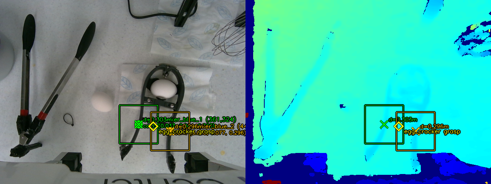
The egg cracker is picked up with the jaws running parallel to its handle, which lets the gripper squeeze straight down the cracking axis when it's time to crack the egg.
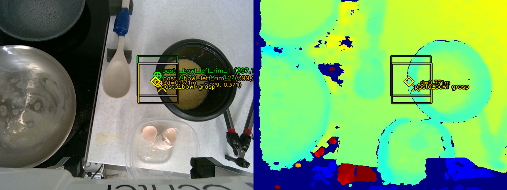
For the bowl, we ask Gemini for two points along the near rim instead of one. We lift both into 3D, use the first as the grasp position, and take the line between them as the rim's direction. We project that line onto the table plane and use its angle to spin the gripper about the vertical axis, so the jaws line up across the rim before pinching and pouring.
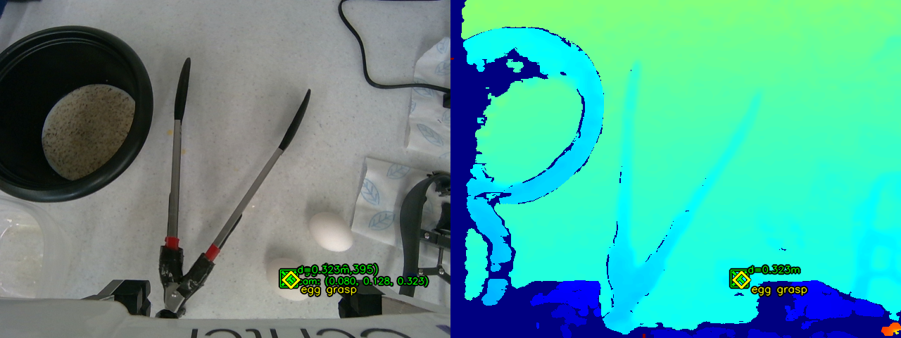
For the egg we use a single point. Gemini marks the egg, we read the depth around that pixel and back-project it into 3D. We determine the angle to orient the tongs and the offset the gripper should have based on the tool length. The gripper stays pointing straight down and closes the tongs around the egg at that spot.
We use force control in a few key spots to handle tools and food without breaking them. Here are the three main use cases:
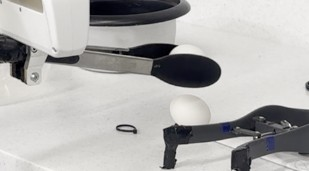
The Franka Hand's grasping force runs from 30 N to 140 N, but an egg cracks around 20 N — below what the gripper can distinguish. So we pick the egg up with tongs, which due to mechanical advantage, allows the gripper to use more force while exerting less on the egg to keep it from breaking.
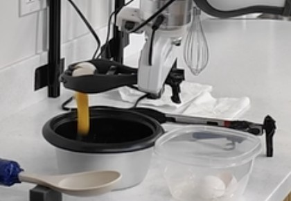
We grab the cracker gently, then ramp up to max force over three squeezes to break the shell, and release so the shell falls open and the egg drops into the bowl.
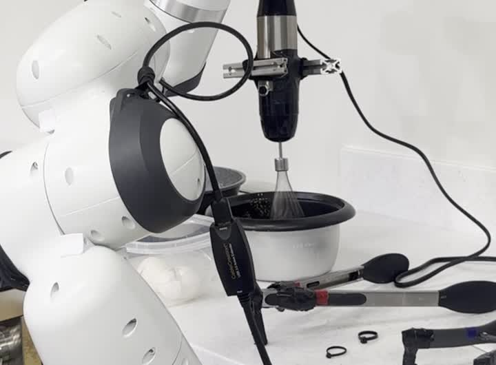
The whisk has a force-controlled button to activate it, and different levels of presses control the speed. At first, we have the robot hold it lightly but firmly to avoid accidental triggers, then squeeze when inside the egg mixture to turn it on, and finally loosen it to stop it before setting it back down.
Tuning these grip forces took a lot of trial and error, especially since the robot only has one gripper to work with and has to use each tool on its own.
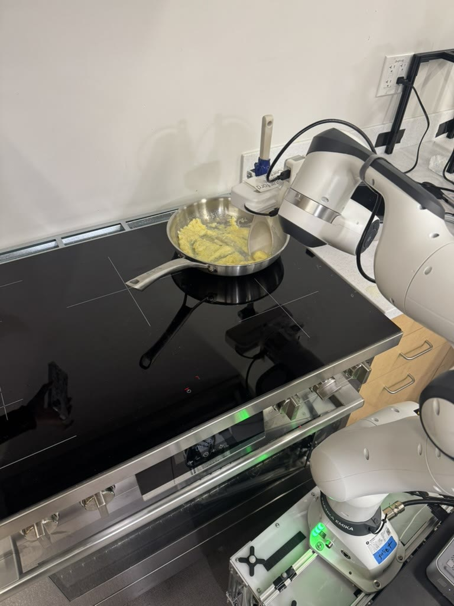
The Franka arm rides on a TidyBot base so EggBot can reposition between the ingredient area and stovetop. The wrist-mounted RealSense D405 provides the aligned RGB-D stream that feeds Gemini for grasp identification.
We started out building the state machine and motions in the OpenSai simulator, but moved to the real robot fairly quickly, as the physics around eggs and our specialized tools weren't worth trying to model in sim.
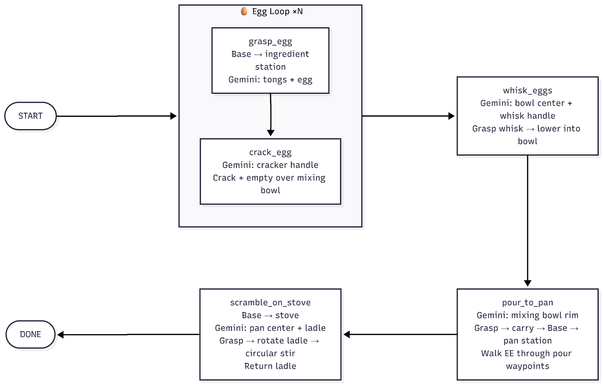
State machine (left) and the OpenSai simulation environment (right).
The real test: did the robot actually make eggs people would eat?
Olivia (team member) tries the eggs
William's (TA) taste test
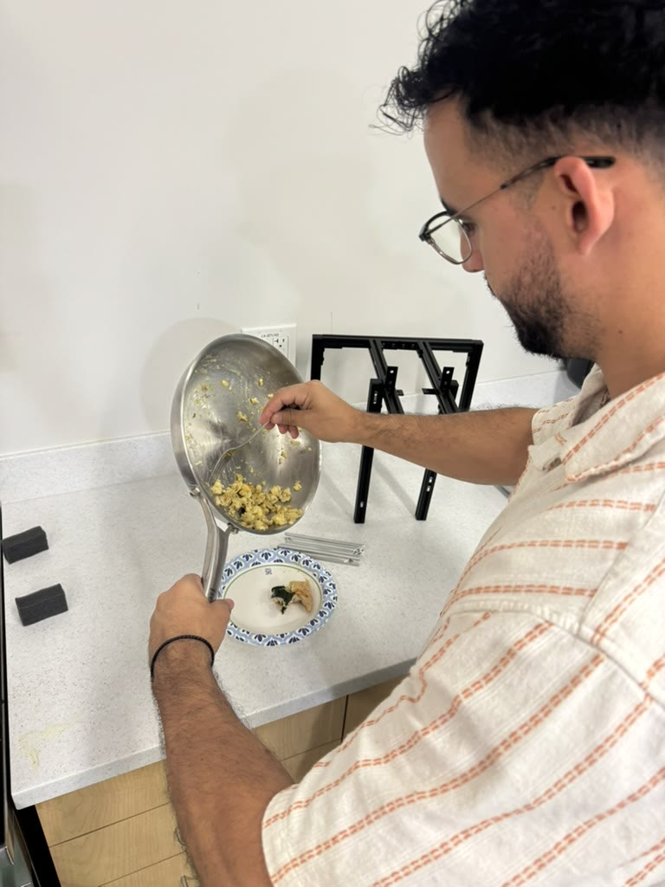
Adrian (TA) greedily taking the rest of the eggs
“Actually pretty good”
“Edible”
Child: “These are really good!” Mom: “Better than mine?” Child: “Yeah!!”
“Wow these are really good!”
The demo run, our final presentation, and our team.
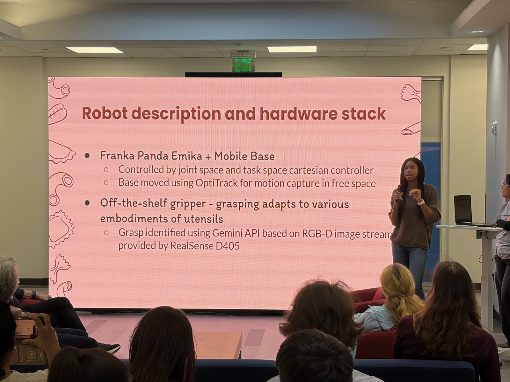
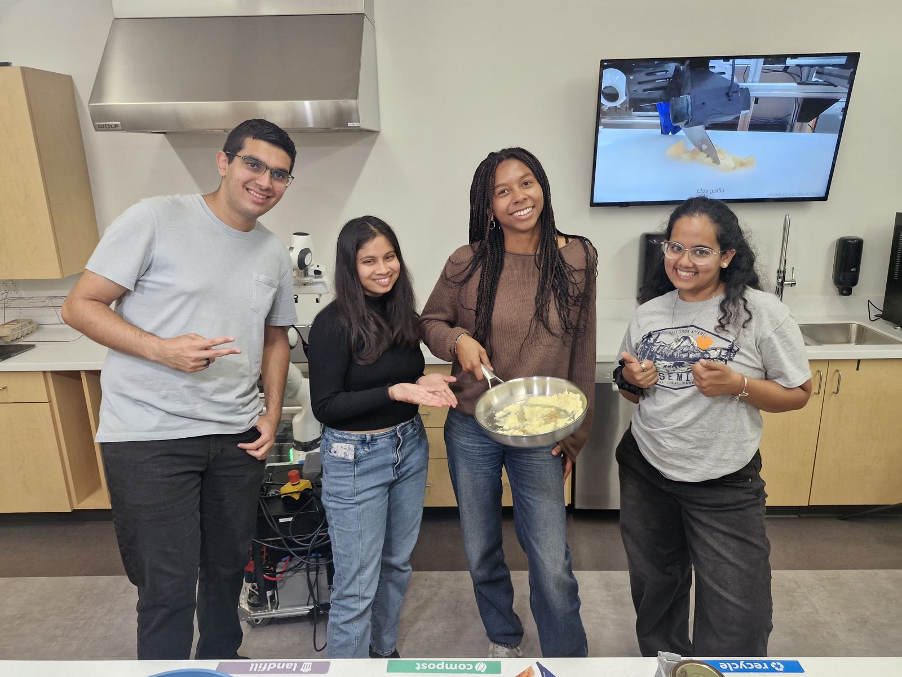
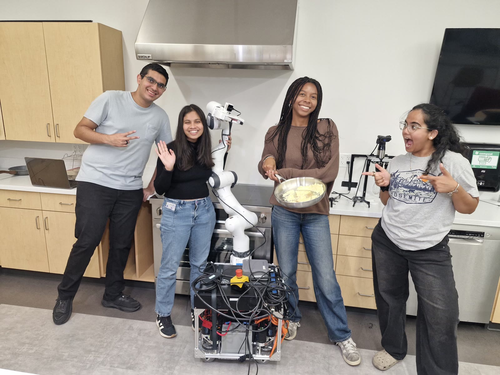
Switching from baked ziti to eggs. We originally set out to make baked ziti, but that pipeline turned out to too long. We narrowed down to eggs, which were already part of the ziti pipeline, and reused most of the same primitives to get a more interactive (and tastier) demo.
Talking to the arm. The link between the onboard computer and the arm was sometimes flaky and would drop out mid-task, which sometimes made the arm move unpredictably.
Eggs are unreliable. No two eggs crack the same way, so we built in some redundancy such as several squeezes to crack and various hakes to knock the shell loose so that stubborn eggs wouldn't break the whole run (but they sometimes did anyway).
You can't make an omelette without breaking a few eggs!
The robot gives up
Vision mistake...